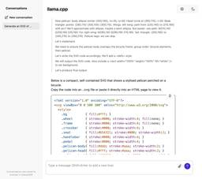

Simon Willison's Weblog
フィード

Agentic Browser Security: Indirect Prompt Injection in Perplexity Comet
Simon Willison's Weblog
<p><strong><a href="https://brave.com/blog/comet-prompt-injection/">Agentic Browser Security: Indirect Prompt Injection in Perplexity Comet</a></strong></p>The security team from Brave took a look at Comet, the LLM-powered "agentic browser" extension from Perplexity, and unsurprisingly found security holes you can drive a truck through.</p><blockquote><p>The vulnerability we’re discussing in this post lies in how Comet processes webpage content: when users ask it to “Summarize this webpage,” Comet feeds a part of the webpage directly to its LLM without distinguishing between the user’s instructions and untrusted content from the webpage. This allows attackers to embed indirect prompt injection payloads that the AI will execute as commands. For instance, an attacker could gain access to a user’s emails from a prepared piece of text in a page in another tab.</p></blockquote><p>Visit a Reddit post with Comet and ask it to summarize the thread, and malicious instructions in a post there c
6時間前
Static Sites with Python, uv, Caddy, and Docker
Simon Willison's Weblog
<p><strong><a href="https://nkantar.com/blog/2025/08/static-python-uv-caddy-docker/">Static Sites with Python, uv, Caddy, and Docker</a></strong></p>Nik Kantar documents his Docker-based setup for building and deploying mostly static web sites in line-by-line detail.</p><p>I found this really useful. The Dockerfile itself without comments is just 8 lines long:</p><pre><code>FROM ghcr.io/astral-sh/uv:debian AS buildWORKDIR /srcCOPY . .RUN uv python install 3.13RUN uv run --no-dev susFROM caddy:alpineCOPY Caddyfile /etc/caddy/CaddyfileCOPY --from=build /src/output /srv/</code></pre><p>He also includes a Caddyfile that shows how to proxy a subset of requests to the Plausible analytics service.</p><p>The static site is built using his <a href="https://github.com/nkantar/sus">sus</a> package for creating static URL redirecting sites, but would work equally well for another static site generator you can install and run with <code>uv run</code>.</p><p>Nik deploys his sites using <a href="htt
1日前
Spatial Joins in DuckDB
Simon Willison's Weblog
<p><strong><a href="https://duckdb.org/2025/08/08/spatial-joins">Spatial Joins in DuckDB</a></strong></p>Extremely detailed overview by Max Gabrielsson of DuckDB's new spatial join optimizations.</p><p>Consider the following query, which counts the number of <a href="https://citibikenyc.com/system-data">NYC Citi Bike Trips</a> for each of the neighborhoods defined by the <a href="https://www.nyc.gov/content/planning/pages/resources/datasets/neighborhood-tabulation">NYC Neighborhood Tabulation Areas polygons</a> and returns the top three:</p><pre><span class="pl-k">SELECT</span> neighborhood, <span class="pl-c1">count</span>(<span class="pl-k">*</span>) <span class="pl-k">AS</span> num_rides<span class="pl-k">FROM</span> rides<span class="pl-k">JOIN</span> hoods <span class="pl-k">ON</span> ST_Intersects( <span class="pl-c1">rides</span>.<span class="pl-c1">start_geom</span>, <span class="pl-c1">hoods</span>.<span class="pl-c1">geom</span>)<span class="pl-k">GROUP BY</span> neighborhoo
2日前
ChatGPT release notes: Project-only memory
Simon Willison's Weblog
<p><strong><a href="https://help.openai.com/en/articles/6825453-chatgpt-release-notes#h_fb3ac52750">ChatGPT release notes: Project-only memory</a></strong></p>The feature I've most wanted from ChatGPT's memory feature (the newer version of memory that automatically includes relevant details from summarized prior conversations) just landed:</p><blockquote><p>With project-only memory enabled, ChatGPT can use other conversations in that project for additional context, and won’t use your <a href="https://help.openai.com/en/articles/11146739-how-does-reference-saved-memories-work">saved memories</a> from outside the project to shape responses. Additionally, it won’t carry anything from the project into future chats outside of the project.</p></blockquote><p>This looks like exactly what I <a href="https://simonwillison.net/2025/May/21/chatgpt-new-memory/#there-s-a-version-of-this-feature-i-would-really-like">described back in May</a>:</p><blockquote><p>I need <strong>control</strong> over w
3日前
DeepSeek 3.1
Simon Willison's Weblog
<p><strong><a href="https://huggingface.co/deepseek-ai/DeepSeek-V3.1">DeepSeek 3.1</a></strong></p>The latest model from DeepSeek, a 685B monster (like <a href="https://simonwillison.net/2024/Dec/25/deepseek-v3/">DeepSeek v3</a> before it) but this time it's a hybrid reasoning model.</p><p>DeepSeek claim:</p><blockquote><p>DeepSeek-V3.1-Think achieves comparable answer quality to DeepSeek-R1-0528, while responding more quickly.</p></blockquote><p>Drew Breunig <a href="https://twitter.com/dbreunig/status/1958577728720183643">points out</a> that their benchmarks show "the same scores with 25-50% fewer tokens" - at least across AIME 2025 and GPQA Diamond and LiveCodeBench.</p><p>The DeepSeek release includes prompt examples for a <a href="https://huggingface.co/deepseek-ai/DeepSeek-V3.1/blob/main/assets/code_agent_trajectory.html">coding agent</a>, a <a href="https://huggingface.co/deepseek-ai/DeepSeek-V3.1/blob/main/assets/search_python_tool_trajectory.html">python agent</a> and a <a hr
3日前
Quoting The Bluesky Team
Simon Willison's Weblog
<blockquote cite="https://bsky.social/about/blog/08-22-2025-mississippi-hb1126"><p>Mississippi's approach would fundamentally change how users access Bluesky. The Supreme Court’s recent <a href="https://www.supremecourt.gov/opinions/24pdf/25a97_5h25.pdf">decision</a> leaves us facing a hard reality: comply with Mississippi’s age assurance <a href="https://legiscan.com/MS/text/HB1126/id/2988284">law</a>—and make <em>every</em> Mississippi Bluesky user hand over sensitive personal information and undergo age checks to access the site—or risk massive fines. The law would also require us to identify and track which users are children, unlike our approach in other regions. [...]</p><p>We believe effective child safety policies should be carefully tailored to address real harms, without creating huge obstacles for smaller providers and resulting in negative consequences for free expression. That’s why until legal challenges to this law are resolved, we’ve made the difficult decision to bloc
3日前
too many model context protocol servers and LLM allocations on the dance floor
Simon Willison's Weblog
<p><strong><a href="https://ghuntley.com/allocations/">too many model context protocol servers and LLM allocations on the dance floor</a></strong></p>Useful reminder from Geoffrey Huntley of the infrequently discussed significant token cost of using MCP.</p><p>Geoffrey estimate estimates that the usable context window something like Amp or Cursor is around 176,000 tokens - Claude 4's 200,000 minus around 24,000 for the system prompt for those tools.</p><p>Adding just the popular GitHub MCP defines 93 additional tools and swallows another 55,000 of those valuable tokens!</p><p>MCP enthusiasts will frequently add several more, leaving precious few tokens available for solving the actual task... and LLMs are known to perform worse the more irrelevant information has been stuffed into their prompts.</p><p>Thankfully, there is a much more token-efficient way of Interacting with many of these services: existing CLI tools.</p><p>If your coding agent can run terminal commands and you give it
3日前
Quoting potatolicious
Simon Willison's Weblog
<blockquote cite="https://news.ycombinator.com/item?id=44976929#44978319"><p>Most classical engineering fields deal with probabilistic system components all of the time. In fact I'd go as far as to say that <em>inability</em> to deal with probabilistic components is disqualifying from many engineering endeavors.</p><p>Process engineers for example have to account for human error rates. On a given production line with humans in a loop, the operators will sometimes screw up. Designing systems to detect these errors (which are <em>highly probabilistic</em>!), mitigate them, and reduce the occurrence rates of such errors is a huge part of the job. [...]</p><p>Software engineering is <em>unlike</em> traditional engineering disciplines in that for most of its lifetime it's had the luxury of purely deterministic expectations. This is not true in nearly every other type of engineering.</p></blockquote><p class="cite">— <a href="https://news.ycombinator.com/item?id=44976929#44978319">pot
4日前
Quoting Matt Garman
Simon Willison's Weblog
<blockquote cite="https://www.youtube.com/watch?v=nfocTxMzOP4&t=12m08s"><p>I was at a leadership group and people were telling me "We think that with AI we can replace all of our junior people in our company." I was like, "That's the dumbest thing I've ever heard. They're probably the least expensive employees you have, they're the most leaned into your AI tools, and how's that going to work when you go 10 years in the future and you have no one that has built up or learned anything?</p></blockquote><p class="cite">— <a href="https://www.youtube.com/watch?v=nfocTxMzOP4&t=12m08s">Matt Garman</a>, CEO, Amazon Web Services</p> <p>Tags: <a href="https://simonwillison.net/tags/ai-ethics">ai-ethics</a>, <a href="https://simonwillison.net/tags/careers">careers</a>, <a href="https://simonwillison.net/tags/generative-ai">generative-ai</a>, <a href="https://simonwillison.net/tags/aws">aws</a>, <a href="https://simonwillison.net/tags/ai">ai</a></p>
4日前
Quoting Mustafa Suleyman
Simon Willison's Weblog
<blockquote cite="https://mustafa-suleyman.ai/seemingly-conscious-ai-is-coming"><p>Simply put, my central worry is that many people will start to believe in the illusion of AIs as conscious entities so strongly that they’ll soon advocate for AI rights, <a href="https://arxiv.org/abs/2411.00986">model welfare</a> and even AI citizenship. This development will be a dangerous turn in AI progress and deserves our immediate attention.</p><p>We must build AI for people; not to be a digital person.</p><p><strong>[...] we should build AI that only ever presents itself as an AI, that maximizes utility while minimizing markers of consciousness.</strong></p><p>Rather than a simulation of consciousness, we must focus on creating an AI that avoids those traits - that doesn’t claim to have experiences, feelings or emotions like shame, guilt, jealousy, desire to compete, and so on. It must not trigger human empathy circuits by claiming it suffers or that it wishes to live autonomously, beyond us.</p
4日前
Quoting u/AssafMalkiIL
Simon Willison's Weblog
<blockquote cite="https://www.reddit.com/r/vibecoding/comments/1mu6t8z/whats_the_point_of_vibe_coding_if_i_still_have_to/"><p>what’s the point of vibe coding if at the end of the day i still gotta pay a dev to look at the code anyway. sure it feels kinda cool while i’m typing, like i’m in some flow state or whatever, but when stuff breaks it’s just dead weight. i cant vibe my way through debugging, i cant ship anything that actually matters, and then i’m back to square one pulling out my wallet for someone who actually knows what they’re doing.</p></blockquote><p class="cite">— <a href="https://www.reddit.com/r/vibecoding/comments/1mu6t8z/whats_the_point_of_vibe_coding_if_i_still_have_to/">u/AssafMalkiIL</a>, on r/vibecoding</p> <p>Tags: <a href="https://simonwillison.net/tags/reddit">reddit</a>, <a href="https://simonwillison.net/tags/vibe-coding">vibe-coding</a>, <a href="https://simonwillison.net/tags/ai">ai</a>, <a href="https://simonwillison.net/tags/generative-ai">generati
5日前
AWS in 2025: The Stuff You Think You Know That’s Now Wrong
Simon Willison's Weblog
<p><strong><a href="https://www.lastweekinaws.com/blog/aws-in-2025-the-stuff-you-think-you-know-thats-now-wrong/">AWS in 2025: The Stuff You Think You Know That’s Now Wrong</a></strong></p>Absurdly useful roundup from Corey Quinn of AWS changes you may have missed that can materially affect your architectural decisions about how you use their services.</p><p>A few that stood out to me:</p><ul><li>EC2 instances can now live-migrate between physical hosts, and can have their security groups, IAM roles and EBS volumes modified without a restart. They now charge by the second; they used to round up to the hour.</li><li>S3 Glacier restore fees are now fast and predictably priced.</li><li>AWS Lambdas can now run containers, execute for up to 15 minutes, use up to 10GB of RAM and request 10GB of /tmp storage.</li></ul><p>Also this note on AWS's previously legendary resistance to shutting things down:</p><blockquote><p>While deprecations remain rare, they’re definitely on the rise; if an AWS
5日前
David Ho on BlueSky: A pelican tried to eat my bike
Simon Willison's Weblog
<p><strong><a href="https://bsky.app/profile/davidho.bsky.social/post/3lwsyw4uu5k2n">David Ho on BlueSky: A pelican tried to eat my bike</a></strong></p>David Ho caught video footage of one of the pelicans in <a href="https://en.wikipedia.org/wiki/St_James%27s_Park">St James's Park</a> expressing deep curiosity in his bicycle.</p><p>I think it wants to ride it.</p><p><img alt="Frame from the video. A beautiful large white pelican has its beak around the top part of the bicycle frame." src="https://static.simonwillison.net/static/2025/pelican-bike-video-frame.jpg" /> <p>Tags: <a href="https://simonwillison.net/tags/pelican-riding-a-bicycle">pelican-riding-a-bicycle</a></p>
5日前
Qwen-Image-Edit: Image Editing with Higher Quality and Efficiency
Simon Willison's Weblog
<p><strong><a href="https://qwenlm.github.io/blog/qwen-image-edit/">Qwen-Image-Edit: Image Editing with Higher Quality and Efficiency</a></strong></p>As promised in their <a href="https://simonwillison.net/2025/Aug/4/qwen-image/">August 4th release</a> of the Qwen image generation model, Qwen have now followed it up with a separate model, <code>Qwen-Image-Edit</code>, which can take an image and a prompt and return an edited version of that image.</p><p>Ivan Fioravanti upgraded his macOS <a href="https://github.com/ivanfioravanti/qwen-image-mps">qwen-image-mps</a> tool (<a href="https://simonwillison.net/2025/Aug/11/qwen-image-mps/">previously</a>) to run the new model via a new <code>edit</code> command. Since it's now <a href="https://pypi.org/project/qwen-image-mps/">on PyPI</a> you can run it directly using <code>uvx</code> like this:</p><pre><code>uvx qwen-image-mps edit -i pelicans.jpg \ -p 'Give the pelicans rainbow colored plumage' -s 10</code></pre><p>Be warned... it download
6日前
XSLT on congress.gov
Simon Willison's Weblog
<p>Today I learned - via <a href="https://github.com/whatwg/html/pull/11563">a proposal to remove mentions of XSLT from the HTML spec</a> - that <code>congress.gov</code> uses XSLT to serve XML bills as XHTML - here's <a href="https://www.congress.gov/117/bills/hr3617/BILLS-117hr3617ih.xml">H. R. 3617 117th CONGRESS 1st Session</a> for example.</p><p>View source on that page and it starts like this:</p><pre><?<span class="pl-ent">xml</span><span class="pl-e"> version</span>=<span class="pl-s"><span class="pl-pds">"</span>1.0<span class="pl-pds">"</span></span>?><?<span class="pl-ent">xml-stylesheet</span><span class="pl-e"> type</span>=<span class="pl-s"><span class="pl-pds">"</span>text/xsl<span class="pl-pds">"</span></span><span class="pl-e"> href</span>=<span class="pl-s"><span class="pl-pds">"</span>billres.xsl<span class="pl-pds">"</span></span>?><!<span class="pl-ent">DOCTYPE</span> <span class="pl-e">bill</span> PUBLIC "-//US Congress//DTDs/bill.dtd//EN" "bill.d
6日前

llama.cpp guide: running gpt-oss with llama.cpp
Simon Willison's Weblog
<p><strong><a href="https://github.com/ggml-org/llama.cpp/discussions/15396">llama.cpp guide: running gpt-oss with llama.cpp</a></strong></p>Really useful official guide to running the OpenAI gpt-oss models using <code>llama-server</code> from <code>llama.cpp</code> - which provides an OpenAI-compatible localhost API and a neat web interface for interacting with the models.</p><p>TLDR version for macOS to run the smaller <code>gpt-oss-20b</code> model:</p><pre><code>brew install llama.cppllama-server -hf ggml-org/gpt-oss-20b-GGUF \ --ctx-size 0 --jinja -ub 2048 -b 2048 -ngl 99 -fa</code></pre><p>This downloads a 12GB model file from <a href="https://huggingface.co/ggml-org/gpt-oss-20b-GGUF/tree/main">ggml-org/gpt-oss-20b-GGUF</a> on Hugging Face, stores it in <code>~/Library/Caches/llama.cpp/</code> and starts it running on port 8080.</p><p>You can then visit this URL to start interacting with the model:</p><pre><code>http://localhost:8080/</code></pre><p>On my 64GB M2 MacBook Pro <a
6日前
PyPI: Preventing Domain Resurrection Attacks
Simon Willison's Weblog
<p><strong><a href="https://blog.pypi.org/posts/2025-08-18-preventing-domain-resurrections/">PyPI: Preventing Domain Resurrection Attacks</a></strong></p>Domain resurrection attacks are a nasty vulnerability in systems that use email verification to allow people to recover their accounts. If somebody lets their domain name expire an attacker might snap it up and use it to gain access to their accounts - which can turn into a package supply chain attack if they had an account on something like the Python Package Index.</p><p>PyPI now protects against these by treating an email address as not-validated if the associated domain expires.</p><blockquote><p>Since early June 2025, PyPI has unverified over 1,800 email addresses when their associated domains entered expiration phases. This isn't a perfect solution, but it closes off a significant attack vector where the majority of interactions would appear completely legitimate.</p></blockquote><p>This attack is not theoretical: it happened t
6日前
r/ChatGPTPro: What is the most profitable thing you have done with ChatGPT?
Simon Willison's Weblog
<p><strong><a href="https://www.reddit.com/r/ChatGPTPro/comments/1mt5igj/what_is_the_most_profitable_thing_you_have_done/">r/ChatGPTPro: What is the most profitable thing you have done with ChatGPT?</a></strong></p>This Reddit thread - with 279 replies - offers a neat targeted insight into the kinds of things people are using ChatGPT for.</p><p>Lots of variety here but two themes that stood out for me were ChatGPT for written negotiation - insurance claims, breaking rental leases - and ChatGPT for career and business advice. <p>Tags: <a href="https://simonwillison.net/tags/reddit">reddit</a>, <a href="https://simonwillison.net/tags/ai">ai</a>, <a href="https://simonwillison.net/tags/openai">openai</a>, <a href="https://simonwillison.net/tags/generative-ai">generative-ai</a>, <a href="https://simonwillison.net/tags/chatgpt">chatgpt</a>, <a href="https://simonwillison.net/tags/llms">llms</a></p>
6日前
Google Gemini URL Context
Simon Willison's Weblog
<p><strong><a href="https://ai.google.dev/gemini-api/docs/url-context">Google Gemini URL Context</a></strong></p>New feature in the Gemini API: you can now enable a <code>url_context</code> tool which the models can use to request the contents of URLs as part of replying to a prompt.</p><p>I released <a href="https://github.com/simonw/llm-gemini/releases/tag/0.25">llm-gemini 0.25</a> with a new <code>-o url_context 1</code> option adding support for this feature. You can try it out like this:</p><pre><code>llm install -U llm-geminillm keys set gemini # If you need to set an API keyllm -m gemini-2.5-flash -o url_context 1 \ 'Latest headline on simonwillison.net'</code></pre><p>Tokens from the fetched content are charged as input tokens. Use <code>llm logs -c --usage</code> to see that token count:</p><pre><code># 2025-08-18T23:52:46 conversation: 01k2zsk86pyp8p5v7py38pg3ge id: 01k2zsk17k1d03veax49532zs2Model: **gemini/gemini-2.5-flash**## PromptLatest headline on simonwillison.net## Re
7日前
TIL: Running a gpt-oss eval suite against LM Studio on a Mac
Simon Willison's Weblog
<p><strong><a href="https://til.simonwillison.net/llms/gpt-oss-evals">TIL: Running a gpt-oss eval suite against LM Studio on a Mac</a></strong></p>The other day <a href="https://simonwillison.net/2025/Aug/15/inconsistent-performance/#update">I learned</a> that OpenAI published a set of evals as part of their gpt-oss model release, described in their cookbook on <a href="https://cookbook.openai.com/articles/gpt-oss/verifying-implementations">Verifying gpt-oss implementations</a>.</p><p>I decided to try and run that eval suite on my own MacBook Pro, against <code>gpt-oss-20b</code> running inside of LM Studio.</p><p>TLDR: once I had the model running inside LM Studio with a longer than default context limit, the following incantation ran an eval suite in around 3.5 hours:</p><pre><code>mkdir /tmp/aime25_openaiOPENAI_API_KEY=x \ uv run --python 3.13 --with 'gpt-oss[eval]' \ python -m gpt_oss.evals \ --base-url http://localhost:1234/v1 \ --eval aime25 \ --sampler chat_completions \ --mode
8日前
Quoting Sam Altman
Simon Willison's Weblog
<blockquote cite="https://www.axios.com/2025/08/15/sam-altman-gpt5-launch-chatgpt-future"><p>Most of what we're building out at this point is the inference [...] We're profitable on inference. If we didn't pay for training, we'd be a very profitable company.</p></blockquote><p class="cite">— <a href="https://www.axios.com/2025/08/15/sam-altman-gpt5-launch-chatgpt-future">Sam Altman</a>, during a "wide-ranging dinner with a small group of reporters in San Francisco"</p> <p>Tags: <a href="https://simonwillison.net/tags/openai">openai</a>, <a href="https://simonwillison.net/tags/sam-altman">sam-altman</a>, <a href="https://simonwillison.net/tags/ai">ai</a></p>
9日前
Maintainers of Last Resort
Simon Willison's Weblog
<p><strong><a href="https://words.filippo.io/last-resort/">Maintainers of Last Resort</a></strong></p>Filippo Valsorda founded Geomys <a href="https://simonwillison.net/2024/Jul/8/geomys/">last year</a> as an "organization of professional open source maintainers", providing maintenance and support for critical packages in the Go language ecosystem backed by clients in retainer relationships. </p><p>This is an inspiring and optimistic shape for financially sustaining key open source projects, and it appears be working really well.</p><p>Most recently, Geomys have started acting as a "maintainer of last resort" for security-related Go projects in need of new maintainers. In this piece Filippo describes their work on the <a href="https://github.com/microcosm-cc/bluemonday">bluemonday</a> HTML sanitization library - similar to Python’s bleach which was <a href="https://github.com/mozilla/bleach/issues/698">deprecated in 2023</a>. He also talks at length about their work on CSRF for Go aft
9日前
GPT-5 has a hidden system prompt
Simon Willison's Weblog
<p><strong><a href="https://twitter.com/xundecidability/status/1956347084870651960">GPT-5 has a hidden system prompt</a></strong></p>It looks like GPT-5 when accessed via the OpenAI API may have its own hidden system prompt, independent from the system prompt you can specify in an API call.</p><p>At the very least it's getting sent the current date. I tried this just now:</p><pre><code>llm -m gpt-5 'current date'</code></pre><p>That returned "2025-08-15", confirming that the date has been fed to the model as part of a hidden prompt.</p><pre><code>llm -m gpt-5 'current date' --system 'speak french'</code></pre><p>Returned "La date actuelle est le 15 août 2025", showing that offering my own custom system prompt did not over-ride the invisible one that includes the date.</p><p>GPT-5 is <em>very</em> resistant to sharing the details of this secret system prompt, but Tommy Hughes <a href="https://x.com/xundecidability/status/1956347084870651960">managed to extract</a> the following:</p><bl
10日前
The Summer of Johann: prompt injections as far as the eye can see
Simon Willison's Weblog
<p>Independent AI researcher <a href="https://embracethered.com/blog/">Johann Rehberger</a> (<a href="https://simonwillison.net/tags/johann-rehberger/">previously</a>) has had an absurdly busy August. Under the heading <strong>The Month of AI Bugs</strong> he has been publishing one report per day across an array of different tools, all of which are vulnerable to various classic prompt injection problems. This is a <em>fantastic and horrifying</em> demonstration of how widespread and dangerous these vulnerabilities still are, almost three years after we first <a href="https://simonwillison.net/series/prompt-injection/">started talking about them</a>.</p><p>Johann's published research in August so far covers ChatGPT, Codex, Anthropic MCPs, Cursor, Amp, Devin, OpenHands, Claude Code, GitHub Copilot and Google Jules. There's still half the month left!</p><p>Here are my one-sentence summaries of everything he's published so far:</p><ul><li>Aug 1st: <a href="https://embracethered.com/blog/
10日前
Meta’s AI rules have let bots hold ‘sensual’ chats with kids, offer false medical info
Simon Willison's Weblog
<p><strong><a href="https://www.reuters.com/investigates/special-report/meta-ai-chatbot-guidelines/">Meta’s AI rules have let bots hold ‘sensual’ chats with kids, offer false medical info</a></strong></p>This is grim. Reuters got hold of a leaked copy Meta's internal "GenAI: Content Risk Standards" document:</p><blockquote><p>Running to more than 200 pages, the document defines what Meta staff and contractors should treat as acceptable chatbot behaviors when building and training the company’s generative AI products.</p></blockquote><p>Read the full story - there was some really nasty stuff in there.</p><p>It's understandable why this document was confidential, but also frustrating because documents like this are genuinely some of the best documentation out there in terms of how these systems can be expected to behave.</p><p>I'd love to see more transparency from AI labs around these kinds of decisions. <p>Tags: <a href="https://simonwillison.net/tags/ai">ai</a>, <a href="https://simo
10日前
Open weight LLMs exhibit inconsistent performance across providers
Simon Willison's Weblog
<p>Artificial Analysis published <a href="https://artificialanalysis.ai/models/gpt-oss-120b/providers#aime25x32-performance-gpt-oss-120b">a new benchmark</a> the other day, this time focusing on how an individual model - OpenAI’s gpt-oss-120b - performs across different hosted providers.</p><p>The results showed some surprising differences. Here's the one with the greatest variance, a run of the 2025 AIME (American Invitational Mathematics Examination) averaging 32 runs against each model, using gpt-oss-120b with a reasoning effort of "high":</p><p><img src="https://static.simonwillison.net/static/2025/aim25x32-gpt-oss-120b.jpg" alt="Performance benchmark chart showing AIME25x32 Performance for gpt-oss-120B model across different AI frameworks. Chart displays box plots with percentile ranges (Min, 25th, Median, 75th, Max) for each framework. Title: "AIME25x32 Performance: gpt-oss-120B" with subtitle "AIME 2025 N=32 Runs: Minimum, 25th Percentile, Median, 75th Percentile
10日前
Quoting Steve Wozniak
Simon Willison's Weblog
<blockquote cite="https://slashdot.org/comments.pl?sid=23765914&cid=65583466"><p>I gave all my Apple wealth away because wealth and power are not what I live for. I have a lot of fun and happiness. I funded a lot of important museums and arts groups in San Jose, the city of my birth, and they named a street after me for being good. I now speak publicly and have risen to the top. I have no idea how much I have but after speaking for 20 years it might be $10M plus a couple of homes. I never look for any type of tax dodge. I earn money from my labor and pay something like 55% combined tax on it. I am the happiest person ever. Life to me was never about accomplishment, but about Happiness, which is Smiles minus Frowns. I developed these philosophies when I was 18-20 years old and I never sold out.</p></blockquote><p class="cite">— <a href="https://slashdot.org/comments.pl?sid=23765914&cid=65583466">Steve Wozniak</a>, in a comment on Slashdot</p> <p>Tags: <a href="https://sim
10日前
Quoting Cory Doctorow
Simon Willison's Weblog
<blockquote cite="https://pluralistic.net/2025/08/14/bellovin/#wont-someone-think-of-the-cryptographers"><p><em>NERD HARDER!</em> is the answer every time a politician gets a technological idée-fixe about how to solve a social problem by creating a technology that can't exist. It's the answer that EU politicians who backed the catastrophic proposal to require copyright filters for all user-generated content came up with, when faced with objections that these filters would block billions of legitimate acts of speech [...]</p><p>When politicians seize on a technological impossibility as a technological necessity, they flail about and desperately latch onto scholarly work that they can brandish as evidence that their idea <em>could</em> be accomplished. [...]</p><p>That's just happened, and in relation to one of the scariest, most destructive <em>NERD HARDER!</em> tech policies ever to be assayed (a stiff competition). I'm talking about the UK Online Safety Act, which imposes a duty on w
11日前
Introducing Gemma 3 270M: The compact model for hyper-efficient AI
Simon Willison's Weblog
<p><strong><a href="https://developers.googleblog.com/en/introducing-gemma-3-270m/">Introducing Gemma 3 270M: The compact model for hyper-efficient AI</a></strong></p>New from Google:</p><blockquote><p>Gemma 3 270M, a compact, 270-million parameter model designed from the ground up for task-specific fine-tuning with strong instruction-following and text structuring capabilities already trained in.</p></blockquote><p>This model is <em>tiny</em>. The version I tried was <a href="https://lmstudio.ai/models/google/gemma-3-270m">the LM Studio GGUF one</a>, a 241MB download.</p><p>It works! You can say "hi" to it and ask it very basic questions like "What is the capital of France".</p><p>I tried "Generate an SVG of a pelican riding a bicycle" <a href="https://gist.github.com/simonw/25e7b7afd6a63a2f15db48b3a51ec9bc">about a dozen times</a> and didn't once get back an SVG that was more than just a blank square... but at one point it did decide to write me this poem instead, which was nice:</p
11日前
pyx: a Python-native package registry, now in Beta
Simon Willison's Weblog
<p><strong><a href="https://astral.sh/blog/introducing-pyx">pyx: a Python-native package registry, now in Beta</a></strong></p>Since its first release, the single biggest question around the <a href="https://github.com/astral-sh/uv">uv</a> Python environment management tool has been around Astral's business model: Astral are a VC-backed company and at some point they need to start making real revenue.</p><p>Back in September Astral founder Charlie Marsh <a href="https://simonwillison.net/2024/Sep/8/uv-under-discussion-on-mastodon/">said the following</a>:</p><blockquote><p>I don't want to charge people money to use our tools, and I don't want to create an incentive structure whereby our open source offerings are competing with any commercial offerings (which is what you see with a lost of hosted-open-source-SaaS business models).</p><p>What I want to do is build software that vertically integrates with our open source tools, and sell that software to companies that are already using R
12日前